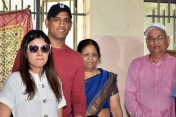
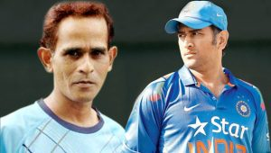
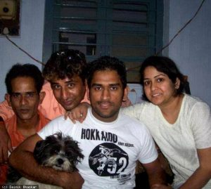
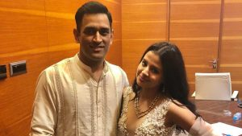
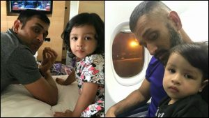

 Mahi was born on July 7, 1981, in Ranchi, Jharkhand, into a Rajput family originally hailed from Uttarakhand. His father, Pan Singh, has been retired from MECON. It is a public sector undertaking under the Ministry of Steel. He worked there at junior management positions. His mother Devaki Devi is a housewife. Dhoni has accredited his father�s discipline for shaping his life. MS once had revealed, �When I was young, I was closer to my mother. But when I was in Class 12, the reason for my father�s reference to discipline became clear to me.�
 Though you call yourself as hardcore Dhoni fan we bet you must never have heard about MS Dhoni�s brother Narendra. Talking to one of the media network, Narendra said, �I am 10 years older to Mahendra Singh Dhoni. By the time, he (MS Dhoni) picked up the bat for the first time, I was out of JVM-Shyamali and had also been away from home since 1991. I was in Almora at Kumon (University) where I completed my higher studies before returning to Ranchi. Although I may have moral contributions in Mahi�s life, showcasing it would have been very difficult in the film (MS Dhoni: The Untold Story).� Narendra, is a politician in Ranchi and lives with his wife and two kids. The last whereabouts known of him are, that Narendra had joined Samajwadi Party. Prior he was with BJP.
 Isadora James once said, �A sister is a gift to the heart, a friend to the spirit, a golden thread to the meaning of life.� These words hold true for MS Dhoni�s sister Jayanti Pandey. She is the real person behind the success of Mahi. At a moment when Dhoni�s family was against him pursuing a career in cricket, it was Jayanti, who offered him all the support and fought with all the odds. She was the one who gave immense encouragement to MS Dhoni to achieve his dreams and one can firmly say that what Dhoni is today, is only because of his sister. Jayanti is a teacher and is happily married. A prime member from MS Dhoni family
 Mahendra Singh Dhoni and Sakshi Rawat knew each other since childhood. Both of their fathers worked in the same company in Ranchi. Later, Sakshi�s family shifted to Dehradun (Uttarakhand), where her grandfather was staying. What a fate! The duo met each other almost after a decade, in the �City of Joy�, Kolkata. Dhoni and Sakshi incidentally met each other at the Taj Bengal, during Indian cricket team stay in 2007.The pair started dating and Sakshi attended Dhoni�s birthday party in 2008. The affair affair was a well-kept secret. The couple got married on July 4, 2010. Many of Dhoni�s friends from cricket, politics and film fraternity attended the wedding in Dehradun, Uttarakhand. Sakshi is core part of MS Dhoni family.
 MS Dhoni and Sakshi are blessed with a daughter whom they named Ziva (born February 6, 2015). Dhoni shares a special bond with Ziva. In one interview Mahi even said, �I don�t know whether it has changed me as a cricketer. As a person? Of course, because we all know daughters are close to their fathers. In my case when Ziva was born I was not there (three years ago). Maximum of the time I was playing cricket, so everything bad somehow is thrown at me (to deal with),� No doubt daddy is making sure his daughter is raised as a sensible and responsible citizen. Dhoni surely knows how to keep his daughter active and entertained. One can find number of adorable videos of father-daughter bond on internet.